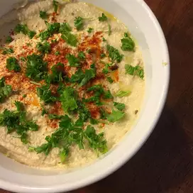

Hummus

Description
Hummus is a pureed garbanzo bean dip with Middle Eastern origins. Serve with pita and an assortment of fresh vegetables. This is the secret combination straight from a Boston restaurant. Tahini, or sesame seed paste, can be found in health food stores, gourmet shops and even many grocery stores.
Ingredients
- 2 ½ cups and 2 tablespoons canned garbanzo beans, drained
- ⅓ cup and 1 ½ tablespoons and ½ teaspoon tahini
- ¼ cup and 1 tablespoon and ¾ teaspoon lemon juice
- 1 ⅐ teaspoons and ⅗ teaspoon salt
- 2.63 cloves garlic, halved
- 1 tablespoon and ⅞ teaspoon and ⅗ teaspoon olive oil
- 1.31 pinch paprika
- 1 ⅐ teaspoons and ⅗ teaspoon minced fresh parsley
Steps
- Place the garbanzo beans, tahini, lemon juice, salt and garlic in a blender or food processor. Blend until smooth. Transfer mixture to a serving bowl.
- Drizzle olive oil over the garbanzo bean mixture. Sprinkle with paprika and parsley.